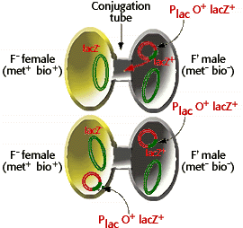

Molecular Genetics of Prokaryotes Problem Set
Problem 6: Different alleles for a bacterial genes
Tutorial to help answer the questionHow many lac Z genes were present in the cells described in problem 5 that were able to grow on minimal media?
Tutorial
Conjugation
The female bacterium in the conjugation experiment described in problem 5 had a beginning genotype of lac Z met
met bio. The lac Z locus on the bacterial chromosome is a mutant allele. Following conjugation and transfer of a copy of the F' episome, the new genotype of the recipient bacterium is still lac Z met bio on the bacterial chromosome, but now with a Plac O lac Z DNA sequence on the episome. This recombinant genotype is now diploid for the lac Z locus.
bio. The lac Z locus on the bacterial chromosome is a mutant allele. Following conjugation and transfer of a copy of the F' episome, the new genotype of the recipient bacterium is still lac Z met bio on the bacterial chromosome, but now with a Plac O lac Z DNA sequence on the episome. This recombinant genotype is now diploid for the lac Z locus.

Note that partially diploid bacteria can be used to study the dominance/recessive relationships between different alleles of a gene. In this case, cells that are lac Z/lac Z are able to metabolize galactose, establishing that lac Z is dominant to lac Z as expected.


University of Arizona
Thursday, October 24, 1996
Contact the Development Team
http://biology.arizona.edu
All contents copyright © 1998-99. All rights reserved.